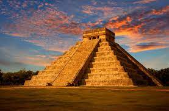
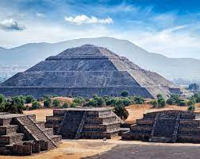
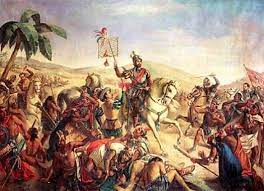

Mexico's first large civilization that mysteriously disappeared. Who were they?
In the lower forest regions of Mexico, the Mayan civilization began around 600 B.C. and lasted til the 9th century when the Mayan civilization mysteriously ended. The Mayans were the most civilized people on the American continent due to multiple things like their artistic forms, scientific knowledge, monumental architecture, calendars, and math.

12th century
Who was Mexico's last empire before the spanish took over?
The next and last big empire started in the valleys of central Mexico in Lake Texcoco. They were called the Aztecs, and they were a tribe of hunters and gatherers before they united to become an empire. They were famous for their agricultural techniques, their military organization, and their religious practices resulting in their famous pyramids. Unlike the Mayans, there is no mystery about how they ended, in the 15th century, they were conquered by the Spanish.

1805
How did the Spanish with a few hundred men conquer an empire?
The Spanish were able to conquer Mexico in less than 20 years because they brought diseases, better weapons, and horses with them. They came to Mexico for free land, resources, like gold and, to spread Christianity. The Spanish rules until 1821 when Mexico finally< became independent.

1807
How did a priest start mexicos independence?
1810, a priest called Miguel Hidalgo issued the famous "Grito de Dolores". The "Grito de Dolores" demanded three things, kicking out the Spanish, land reforms, and racial equality. He was killed by a firing squad, but his movement continued. By 1821, after 11 years of fighting Mexico was finally independent.